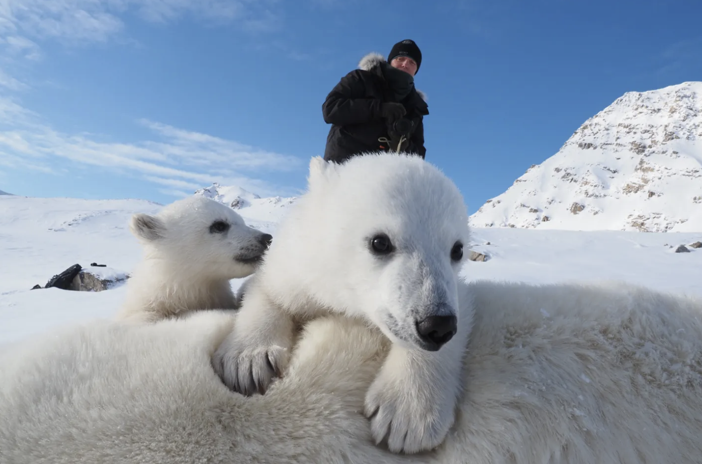
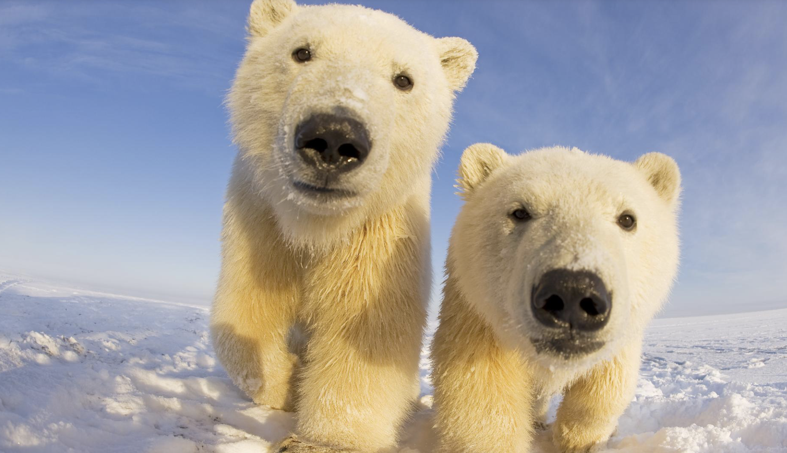

From Wikipedia, the free encyclopedia
For other uses, see Polar bear (disambiguation). The polar bear is a large bear species native to the Arctic region.

The polar bear (Ursus maritimus) is a large bear native to the Arctic and surrounding areas. It is well adapted to living in extremely cold environments and is known for its thick fur, broad paws and excellent swimming ability. Polar bears are the largest living bear species, alongside the closely related brown bear, and are among the largest land carnivores in the world.
Polar bears spend much of their lives on sea ice, where they hunt seals. Their scientific name means "sea bear", reflecting their close connection with the Arctic Ocean. Although their fur appears white, the hairs are translucent, and their skin is black. These features help them survive in their cold environment.
Description
Polar bears have a large body, a long neck, a relatively small head and powerful limbs. Adult males are generally larger than females. Their thick fur and layer of body fat help keep them warm in freezing temperatures. Their large paws spread their weight across the snow and provide grip on slippery ice.
Polar bears are strong swimmers. Their broad front paws help them move through water, while their hind legs act as rudders. They can swim long distances when searching for food or travelling between areas of sea ice.
History and evolution
Polar bears evolved from ancestors shared with brown bears. They gradually developed adaptations that allowed them to survive in the Arctic, including specialised fur, body fat and hunting techniques suited to icy environments.
Scientists study polar bear fossils, genetics and behaviour to understand how the species evolved. Research also helps explain how polar bears may respond to changing Arctic conditions and the loss of sea ice.
Habitat
Polar bears live throughout the Arctic, including parts of Canada, Greenland, Norway, Russia and the United States in Alaska. They are especially associated with sea ice, which provides a platform for hunting seals and travelling across their territory.
The amount and location of sea ice changes throughout the year. During periods when ice melts, polar bears may spend more time on land or swim between suitable areas. Their survival is closely connected to the availability of sea ice.
Diet
Polar bears are carnivores. Ringed seals are among their most important prey, and they also hunt bearded seals. Seals provide large amounts of fat and energy, helping polar bears maintain their body condition in the cold Arctic climate.
Polar bears may also eat other available food, including birds, eggs, carcasses and vegetation. However, these foods generally cannot replace the energy they obtain from seals. They often wait near seal breathing holes or along the edges of sea ice to hunt.
Behaviour
Polar bears usually live alone, except when mothers are raising cubs or during the breeding season. They travel over large areas in search of food and suitable sea ice. Their movements depend on weather, ice conditions and the availability of prey.
Female polar bears give birth to cubs in maternity dens, often dug into snow. Cubs remain with their mothers for an extended period while learning how to move through their environment and find food. The mother provides protection and nourishment during this important stage of development.
Conservation
Polar bears face several threats, especially the loss of sea ice caused by climate change. As the ice-free season becomes longer in many areas, bears may have fewer opportunities to hunt seals. This can affect their health, reproduction and survival.
Other challenges include pollution, conflicts with humans and changes to Arctic ecosystems. Conservation efforts include scientific monitoring, protection of important habitats, international cooperation and reducing greenhouse gas emissions.
See also
Arctic
Brown bear
Climate change
Arctic wildlife
